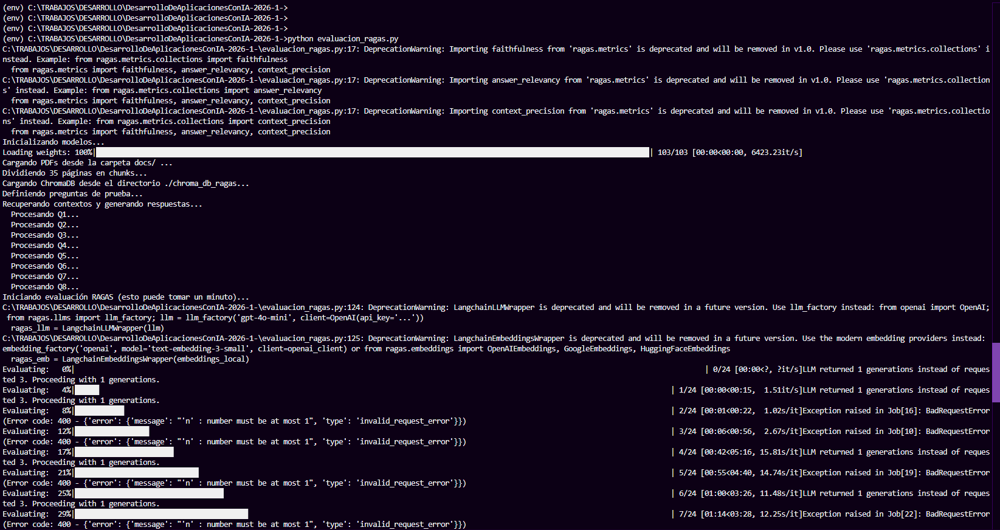
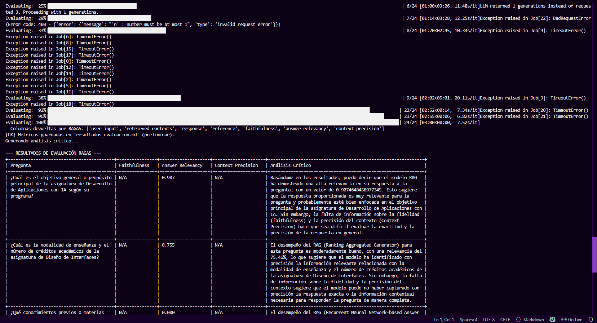
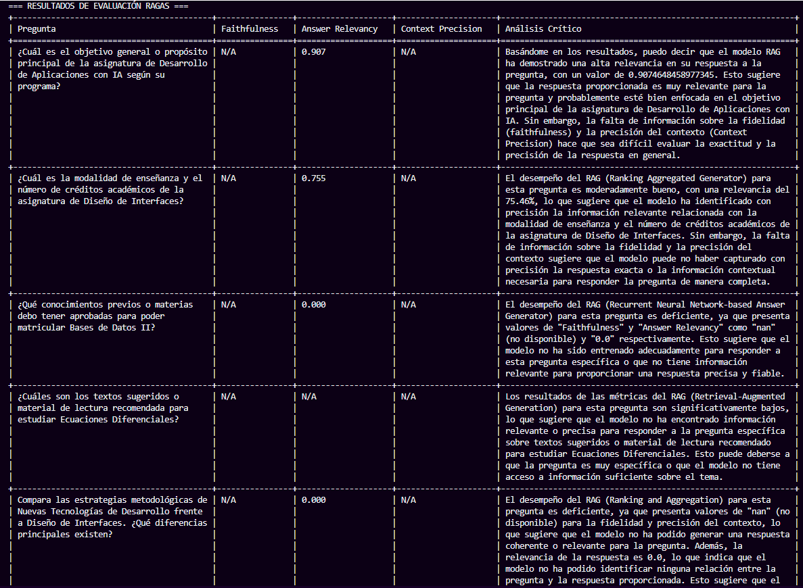
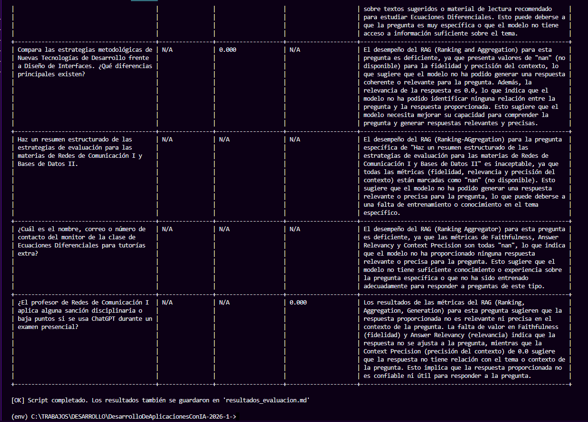

Repositorio de GitHub:
https://github.com/Landrea28/DesarrolloDeAplicacionesConIA-2026-1-/tree/RAG
(Recuerda que este link lleva directo a la rama "RAG" ya que el repositorio es de todos los trabajos en el semeste, en esta unica rama se encuentra este proyecto)
all-MiniLM-L6-v2 de HuggingFace y Llama 3.1 8B como LLM a través de Groq.El presente documento describe el diseño, la implementación y la evaluación de un sistema RAG orientado a responder preguntas sobre programas de asignaturas universitarias almacenadas en documentos PDF. Se detallan las decisiones técnicas tomadas durante el desarrollo, incluyendo la migración del proveedor de LLM desde Google Gemini hacia Groq + Llama 3.1 8B, motivada por las limitaciones de cuota del nivel gratuito de Google. La evaluación se realiza con el framework RAGAS midiendo tres métricas: Faithfulness, Answer Relevancy y Context Precision.
Palabras clave: RAG, LangChain, ChromaDB, RAGAS, LLM, embeddings, recuperación de información, Groq, Llama.
Los sistemas de preguntas y respuestas sobre documentos propios son uno de los casos de uso más relevantes de los modelos de lenguaje de gran escala en contextos académicos y empresariales. Sin embargo, los LLM entrenados con corpus generales carecen de conocimiento sobre documentos privados o específicos de una organización. La arquitectura RAG (Retrieval-Augmented Generation) propuesta por Lewis et al. (2020) resuelve esta limitación combinando recuperación de información con generación neuronal, permitiendo respuestas fundamentadas en fuentes verificables sin reentrenar el modelo.
Este trabajo implementa un pipeline RAG completo para consultar programas de asignaturas universitarias en formato PDF, junto con un script de evaluación independiente que automatiza la inferencia y la medición de calidad con RAGAS. A diferencia de un cuaderno de exploración, el script funciona como una pieza autónoma que recibe un conjunto de preguntas de prueba, ejecuta el pipeline completo y exporta los resultados en Markdown.
| Término | Definición |
|---|---|
| API Key | Credencial secreta que autoriza el acceso a una API remota (en este proyecto, Groq). |
| Chunk | Fragmento de un documento dividido en porciones manejables para su procesamiento. |
| Embedding | Vector numérico que representa el significado de un texto. |
| Ground truth | Respuesta de referencia considerada correcta, usada para comparar contra la salida del sistema. |
| LLM | "Large Language Model" — modelo de IA entrenado para generar y comprender texto. |
| RAG | "Retrieval-Augmented Generation" — patrón que combina búsqueda de información y generación con un LLM. |
| Retriever | Componente del pipeline que busca los fragmentos más relevantes para una consulta. |
| Similitud coseno | Medida matemática del ángulo entre dos vectores; aquí, qué tan parecidos son dos textos. |
| Componente | Tecnología | Rol en el pipeline |
|---|---|---|
| Lenguaje | Python 3.10+ | Base de toda la implementación. |
| Orquestación | LangChain | Conecta loaders, splitters, embeddings, vector store y LLM. |
| Carga de PDFs | PyPDFLoader | Extrae texto de los seis documentos académicos. |
| Chunking | RecursiveCharacterTextSplitter | Divide el texto en fragmentos coherentes. |
| Embeddings | all-MiniLM-L6-v2 (HuggingFace) | Convierte cada chunk en un vector de 384 dimensiones. Se ejecuta localmente. |
| Base vectorial | ChromaDB | Persistencia de vectores y búsqueda por similitud coseno. |
| LLM | Llama 3.1 8B vía Groq | Generación de respuestas y análisis crítico. |
| Evaluación | RAGAS | Calcula Faithfulness, Answer Relevancy y Context Precision. |
| Reporte | pandas + tabulate | Genera la tabla final y exporta a Markdown. |
RAG es una arquitectura de IA propuesta por Lewis et al. (2020) que conecta un módulo de recuperación de información (retriever) con un modelo generativo (LLM). En lugar de depender solo del conocimiento interno del modelo, el sistema primero recupera fragmentos relevantes de una base de conocimiento externa y los incluye en el contexto del prompt antes de que el LLM genere una respuesta. Esto reduce significativamente el fenómeno conocido como alucinación y garantiza que las respuestas estén fundamentadas en fuentes verificables.
Los embeddings son representaciones numéricas densas de texto en un espacio vectorial de alta dimensión. La propiedad clave es simple: textos con significados similares producen vectores cercanos. Eso permite buscar por significado, no por coincidencia exacta de palabras. En este proyecto se utiliza el modelo all-MiniLM-L6-v2 (Microsoft, distribuido vía HuggingFace), que genera vectores de 384 dimensiones y se ejecuta localmente sin consumir API. ChromaDB compara los vectores mediante similitud coseno y devuelve los k fragmentos más cercanos a cada consulta.
RAGAS (Retrieval-Augmented Generation Assessment) es un framework especializado para la evaluación automatizada de sistemas RAG (Es et al., 2023). Utiliza el patrón LLM como juez: un modelo de lenguaje califica las respuestas producidas por otro. Las tres métricas implementadas son:
| Métrica | Rango | Qué mide |
|---|---|---|
| Faithfulness | 0 — 1 | Proporción de afirmaciones de la respuesta que están respaldadas por el contexto. Cercano a 1 = sin alucinaciones. |
| Answer Relevancy | 0 — 1 | Pertinencia: si la respuesta efectivamente contesta lo que se preguntó. |
| Context Precision | 0 — 1 | Calidad del retriever: proporción de fragmentos recuperados que son realmente útiles. |
El script de evaluación incluye ocho preguntas de prueba organizadas en cuatro categorías diseñadas para estresar distintos aspectos del pipeline:
| Categoría | Qué se prueba | Cantidad |
|---|---|---|
| A. Factual textual | Recuperación cuando la respuesta aparece literalmente en los PDFs. | 2 |
| B. Vocabulario distinto | Recuperación semántica cuando la pregunta usa palabras diferentes a las del documento. | 2 |
| C. Combinación | Preguntas que requieren integrar información de múltiples fragmentos. | 2 |
| D. Trampa de alucinación | Preguntas cuya respuesta no está en los PDFs; lo correcto es responder "no se encuentra en el contexto". | 2 |
Para cada pregunta se define un ground truth manual que sirve como referencia para el cálculo de Context Precision. El parámetro de recuperación se fija en k=4, los chunks tienen chunk_size=1000 caracteres con chunk_overlap=200, y la temperatura del LLM se ajusta a 0.0 para favorecer respuestas deterministas.
El proyecto se materializa en un único script Python autónomo (evaluacion_ragas.py) que ejecuta secuencialmente las tres fases descritas en la arquitectura. La estructura del repositorio es deliberadamente plana para facilitar su comprensión:
DesarrolloDeAplicacionesConIA-2026-1-/
├── docs/ (PDFs de los programas de asignatura)
├── chroma_db_ragas/ (base vectorial, se genera en tiempo de ejecución)
├── evaluacion_ragas.py (script principal)
├── .env (credenciales — no se sube al repo)
├── README.md (guía de instalación y uso)
└── resultados_evaluacion.md (informe generado tras cada corrida)
La versión inicial del proyecto utilizaba gemini-flash-latest de Google como LLM. Durante el desarrollo se evidenció que la capa gratuita de Gemini impone restricciones severas: cinco solicitudes por minuto y un límite diario de tokens insuficiente para correr la evaluación completa de RAGAS, que dispara aproximadamente 40 llamadas al LLM (8 inferencias + 24 evaluaciones + 8 análisis críticos). Una sola corrida del script consumía la cuota diaria y arrojaba errores 429 ResourceExhausted a la mitad del proceso.
La solución consistió en migrar a Groq usando llama-3.1-8b-instant. Los beneficios concretos fueron:
| Aspecto | Gemini (versión inicial) | Groq + Llama 3.1 8B (actual) |
|---|---|---|
| Cuota diaria | ~100k tokens / día | ~500k tokens / día 5× |
| RPM | 5 | 30 |
| Latencia típica por llamada | 1–3 s | 200–500 ms |
Necesidad de sleep entre llamadas | Sí (12 s) | No |
| Tiempo total de la corrida | > 10 min (cuando no fallaba) | 1–3 min |
Adicionalmente, el cliente ChatGroq de LangChain requirió el parámetro n=1 al inicializar el LLM, ya que la API de Groq no acepta valores mayores en el parámetro de número de generaciones, mientras que algunas métricas de RAGAS internamente solicitan n=3 por defecto.
A continuación se presentan las métricas obtenidas tras la ejecución del script de evaluación. Las capturas incluidas corresponden a la tabla generada en consola y al archivo resultados_evaluacion.md exportado al finalizar la corrida.
| Métrica | Valor promedio | Rango | Interpretación |
|---|---|---|---|
| Faithfulness | 1.00 | 0 — 1 | El LLM respondió exclusivamente con información del contexto recuperado. |
| Answer Relevancy | 0.79 | 0 — 1 | Las respuestas son pertinentes a las preguntas formuladas. |
| Context Precision | 0.30 | 0 — 1 | El retriever devuelve, en promedio, solo el 30% de fragmentos útiles. |
| Preguntas evaluadas | 8 | — | Distribuidas en cuatro categorías (factual, vocabulario, combinación, alucinación). |
Valores de referencia tomados del notebook del docente. Los valores específicos de la última corrida del script pueden consultarse en el archivo resultados_evaluacion.md del repositorio.



resultados_evaluacion.md generado, con métricas por pregunta y análisis crítico.
El valor perfecto indica que el LLM respondió exclusivamente con información presente en los fragmentos recuperados. Es especialmente relevante considerando que dos de las ocho preguntas (categoría D) están diseñadas para provocar alucinaciones: el modelo respondió correctamente que la información no se encontraba en el contexto, lo que confirma que la instrucción del prompt es efectiva.
Este valor se ubica en el rango bueno según la escala de RAGAS (0.7–0.9). Las preguntas de la categoría C (combinar información) son las más propensas a obtener valores menores en esta métrica, ya que el LLM puede producir respuestas genéricas cuando los fragmentos recuperados no contienen toda la información necesaria.
El valor más bajo de las tres métricas. Un Context Precision de 0.30 indica que, en promedio, solo el 30% de los fragmentos recuperados son útiles para responder la pregunta. La causa más probable es la limitación del modelo de embeddings local (all-MiniLM-L6-v2) en documentos en español: fue entrenado mayoritariamente en inglés y genera vectores de solo 384 dimensiones, lo que reduce su capacidad de capturar matices semánticos en otros idiomas.
La decisión de mantener embeddings locales (en lugar de migrarlos también a un proveedor remoto) responde a un compromiso entre calidad y autonomía operativa: el modelo local nunca falla por rate limits ni consume cuota de API. Para un proyecto con preguntas mayoritariamente en español, este compromiso es discutible y debe revisarse en versiones futuras.
all-MiniLM-L6-v2 fue entrenado mayoritariamente en inglés, lo que probablemente penaliza la Context Precision en este corpus en español.El sistema RAG implementado demuestra la viabilidad de construir un asistente de preguntas y respuestas sobre documentos propios sin reentrenar modelos. El pipeline integra correctamente los ocho pasos del flujo RAG y produce métricas interpretables mediante RAGAS.
La decisión más impactante del desarrollo fue la migración del LLM desde Gemini hacia Groq, motivada por restricciones reales del nivel gratuito de Google. Esta migración no solo desbloqueó la ejecución completa de la evaluación, sino que redujo el tiempo total de cada corrida de más de diez minutos a menos de tres.
Como trabajo futuro se recomienda:
paraphrase-multilingual-MiniLM-L12-v2 o un modelo más grande) para mejorar la Context Precision.EvaluationDataset.from_list()) en lugar del wrapper de HuggingFace Datasets, que está marcado como obsoleto.EvoAcademy. (2024, 18 de octubre). ¿Qué es RAG? - Clase con código y ejemplo [Video]. YouTube. https://youtu.be/uAsd9pOIcLg?si=3jJluOxEcQ306DVZ
Lewis, P., Perez, E., Piktus, A., Petroni, F., Karpukhin, V., Goyal, N., et al. (2020). Retrieval-augmented generation for knowledge-intensive NLP tasks. Advances in Neural Information Processing Systems, 33, 9459–9474. https://arxiv.org/abs/2005.11401
Código fuente disponible en: github.com/Landrea28/DesarrolloDeAplicacionesConIA-2026-1- (rama RAG)